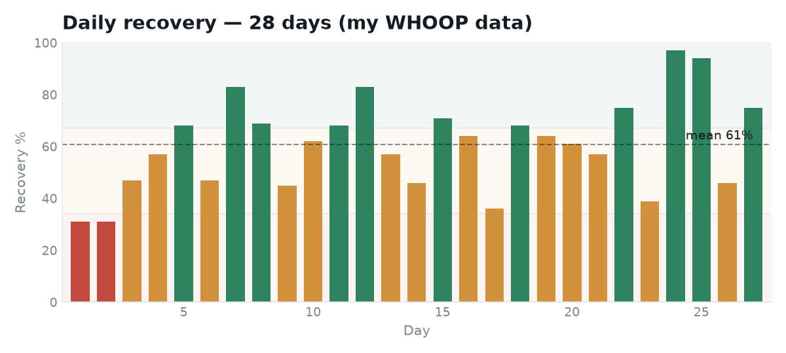
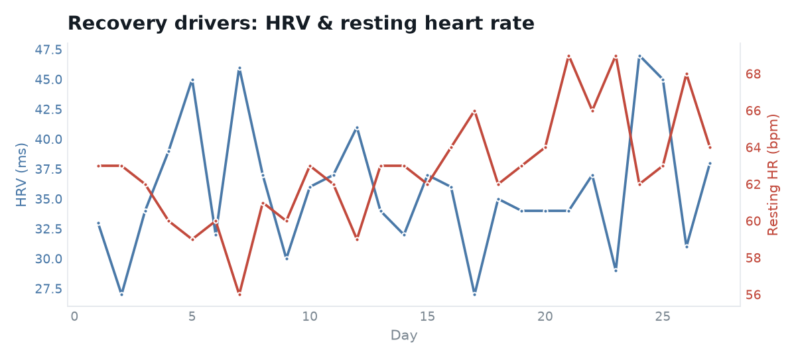

Recovery & Readiness Analysis
28 days of my own WHOOP data — recovery, HRV, resting heart rate and sleep — analysed in Python and turned into the readiness view a coach uses to decide who trains hard today.
The idea
Readiness answers one question before every session: is this athlete recovered enough to train hard, or should today be modified? WHOOP’s recovery score is a clean proxy — it blends heart-rate variability, resting heart rate and sleep into a single 0–100%.
I exported my own WHOOP data and analysed it in Python to build the view a performance department actually uses — a daily recovery signal, the physiological markers behind it, and the days that warrant a lighter session.
My recovery, day by day
Each bar is one day’s recovery, colour-coded into WHOOP’s zones — green ≥ 67% (ready to train), amber 34–66% (moderate), red < 34% (prioritise recovery). Over the month: 11 green, 14 amber, 2 red — a realistic pattern for someone training through a lacrosse season.

What drives it
Recovery isn’t a black box — it tracks two physiological markers. HRV (higher = better recovered) and resting heart rate (lower = better recovered) move in opposite directions on good days. Plotting them together shows the signal behind the score.

What it shows
- Real wearable-data pipeline — parsing a WHOOP export, cleaning dates and metrics, and deriving recovery zones in Python.
- Individual baselines — sleep performance held strong (94% mean), so the dips in recovery came from load and HRV, not sleep — the kind of read that changes a coaching decision.
- Flagging that matters — the two red days are the actionable output: the mornings I’d have modified training.
This closes the loop with the lacrosse app, which collects the daily wellness inputs, and the GPS report, which measures the load. Recovery is where they meet — the read that decides how hard tomorrow should be.